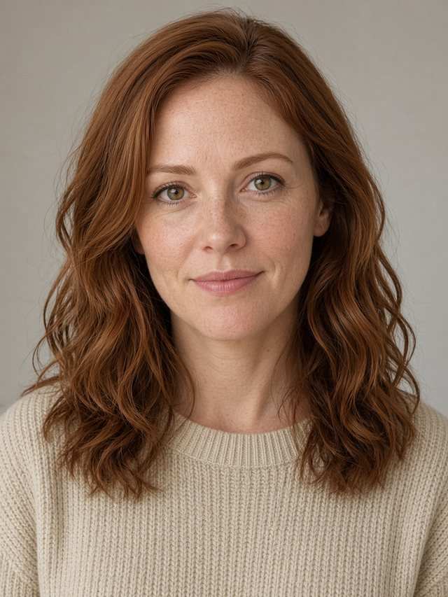
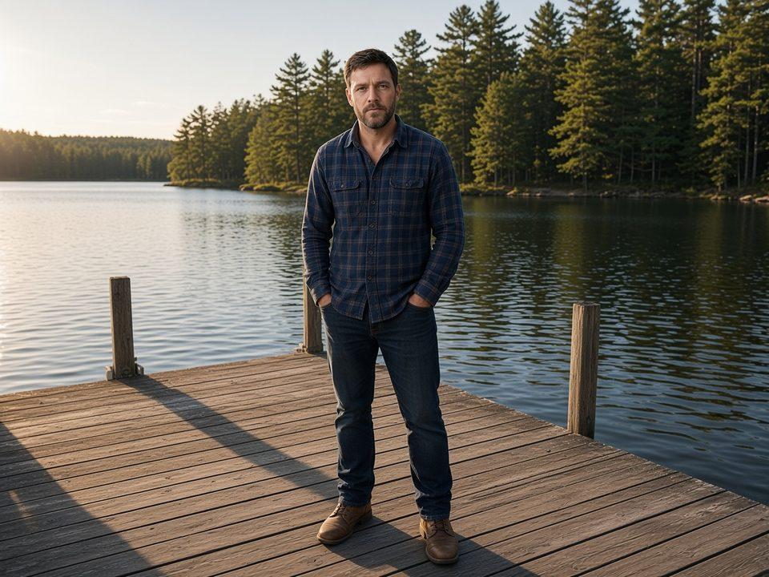
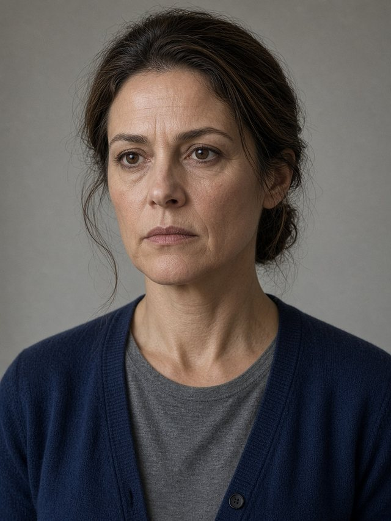

Det. Sam Ortiz · Montana State Police
Start with the folder. Take out what you need.
Shared tokens and pattern specimens for the Clara Hale journey. The live game still draws itself from journey/index.html. This page names each pattern and shows the markup a second case plugs into. Portrait and prop files are shown as stored. Grading them is a separate change.
Daylight is the default desk. The kitchen theme swaps paper for wood and the accent for copper. Buttons stay pine in both. Gold marks the thing to do next. Red yarn is a theory. Gold yarn is the thread you are about to remove.
--ds-paper--ds-ink--ds-pine--ds-copper--ds-gold--ds-alarm--ds-yarn--ds-wood--ds-env-a--ds-env-b--ds-env-c--ds-note-paperFour faces, all already in the player. Atkinson for interface copy a tired player can read. Archivo Black for the case title. Courier for the folder inventory and the cold open. Caveat for notes the player writes.
Pine Hollow Case Files · Case 1
The Vanishing of Clara Hale
A woman is missing from a small Montana town. Listen, look, and work out what happened.
Seat forward + Marcy 5′2″ → MARCY drove the car
Case folder · HALE, Clara
Live families
Atkinson UI · ArchivoBlack titles · CourierP inventory · Caveat notes. Tokens: --ds-font-ui, --ds-font-display, --ds-font-mono, --ds-font-hand.
Characters are real photographs: natural, a little rough, desaturated, still recognizable. Props (the folder, prints, the newspaper) look like objects on a desk, with ragged paper and soft shadows. Grade that look into the file. The player does not run a CSS filter over portraits, so a finished file is not filtered twice.

.ds-photo-frame.is-treated. Use it only while a file is still being graded.Filter --ds-photo-filter (grayscale .22, saturate .7, contrast 1.05) plus grain at --ds-photo-grain. Crop with object-position: center 16% and a 4px radius, so the print looks cut, not like an app avatar.
Two desks share one case. Daylight is calm paper. The kitchen table is warm wood, and the lamp comes on with the evening. The cork is a photograph, not a flat brown. The open folder is manila with a spine shadow and two pages: a pale green inventory and a warm right-hand page of evidence.
--ds-paper--ds-woodphoto in the player--ds-manila-0Specimen · live classes .talk, .bub
Start with the folder. Take out what you need.
A head-and-shoulders still, tilted a couple of degrees, beside a paper speech bubble. The copper kicker is the speaker. The same crop is reused as a small face on a tape, a pin, and an evidence thumb (.av, .pinface, .vface).
<div class="talk">
<img src="assets/portraits/ortiz.jpg" alt="Det. Sam Ortiz">
<div class="bub">
<div class="who">Det. Sam Ortiz</div>
<div class="t">Start with the folder.</div>
</div>
</div>

DANIEL AT THE DOCK 3:52 PM. Boots in the shot. The time matters.Live classes .it and .cardx
Inside the folder, an evidence card is a small paper tile: thumb, name, and where it goes (desk or board). The suggested-next tile gets a warm outline. On the cork, a pinned note is lined paper with a red top rule and a slight tilt. The number is the review order, not a score.
<div class="it up"> <span class="ord">1</span> <div class="th" style="background-image:url(...)"></div> <b>Case briefing (start here)</b> <em class="why">Suggested next</em> </div>
The folder arrives closed. Opening it shows Ortiz’s suggested order: a nudge, not a lock. The first item still in the folder is marked “Suggested next.” Taken items stay on the left inventory, struck through.
Click the folder. Click the dim desk around it to put it back.
Live prop: assets/evidence/folder-closed.webp. Ragged edges belong in the photograph.
Handoff leaves the folder shut and tells the player so. The side card and the whisper both say to open it and start with the briefing. The spread itself is .fold: manila, a spine, .guide, .order, and the tiles.
<div class="fold">
<div class="lp">
<h3>Case folder · HALE, Clara</h3>
<p class="guide">A suggested order. Not a rule.</p>
<ol class="order">
<li class="now">Read this first</li>
<li>Interviews</li>
</ol>
</div>
<div class="rp"><div class="items">…</div></div>
</div>
Three envelopes sit sealed until the case earns them. They are one physical envelope, recolored. A is the photo as shot. B shifts blue. C shifts green. The player tears along the dashed line, then the inside of A or B opens as a folder with its own review order. C is the wrap-up, not another pile of pins.
A · after Objective 1
B · after the breakthrough
C · after the case is solved
Live class .envw .e. Filters: --ds-env-b-filter, --ds-env-c-filter.
Click the red thread. Then remove it, or click the cork to cancel.

Marcy · partnerA pin is the photo, a red pushpin, and a name plate, rotated a few degrees. Yarn is --ds-yarn, 3.5px, round caps. The selected thread turns gold and thickens. Clicking it again, or clicking empty cork, cancels. Remove thread cuts it.
The wide invisible stroke is the hit target. The visible line does not have to catch the click by itself.
It is closed on the desk. Take the briefing out first.
Live: .card.next and #whisper
Two surfaces, one next step. The side card carries the title, a sentence, and a button. The whisper on the desk is the shorter line, and it stays hidden during the intro and the handoff. The Hint button in the top bar repeats the whisper as a toast. Copy comes from nextStep() for the current beat. A new case keeps both surfaces and writes its own lines.
Foreground things (the open folder, a photo, a tape, an envelope) sit on a dim, slightly blurred desk. Clicking that dim area puts the thing back. The press has to start and end out there, so a drag that begins on a list, a pin, or a tape control does not dismiss. The back button is its own control. Escape closes too.
The case opens like a record sleeve. The photograph is CASE.cover, a path or URL, painted by paintCaseCover(). It is not a path baked into the CSS. The picture is a little soft and covered by a dark scrim so the title stays readable.
A woman is missing from a small Montana town. Listen to the interviews, look at the evidence, and work out what happened to Clara.
<!-- CASE.cover = "assets/covers/their-case.jpg" -->
<div id="scene" class="album">
<div class="album-bg"></div>
<div class="album-scrim"></div>
<div class="sc">
<div class="kick">…</div>
<h1>…</h1>
<p class="lead">…</p>
</div>
</div>
The desk follows the player’s real clock. It changes the light, the mug, and what is sitting there to eat. It never gates the case, and it is not saved as progress. The prototype panel can preview a band without writing it.
🌤 Case 25-0412 · Open Morning · 9:12 AM
One level for interview tapes, the voicemail, and Ortiz. The slim control sits in the top bar. The same control sits in the tape player. Mute and the slider stay in sync. In the game this is remembered on this device (localStorage key jp-vol). This page does not write that key.
Live hooks: [data-vol] and [data-volmute].
The opener the player reads today is a small object: title, kick, lead, cover. Everything else sits beside it. Author the next file in the shape in case.contract.js, then map it onto those tables. The full field list and the copy-this checklist are in the reuse guide.
| Put the file here | Point the case at it |
|---|---|
assets/covers/<case>.jpg | CASE.cover |
assets/portraits/<id>.jpg | portraits in the contract, A.p_* in the player |
assets/evidence/… | thumbs and props, including the closed folder |
assets/audio/… | tapes and Ortiz. The player’s AU map. |
?preview=1 fixes a scrubber to the bottom of the journey so someone can walk the beats. It does not read or write a real playthrough. Leave it out of a new case file, and leave it out of the player patterns above. It stays in journey/index.html as its own tool.
| In the system | Still one-off in the player |
|---|---|
| Tokens for color, type, space, elevation, materials, and the photo spec. The player’s existing color variables read those tokens. | Component CSS still lives in index.html. This folder mirrors it. It does not replace it. |
| Specimens for the character card, evidence card, closed and open folder, envelope, pin and thread, next-step hint, scrim, album opener, ambience, and volume. | Tape-player chrome, the report, the reveal, the drawer, the stamp, and the rank card. |
| The case-file shape: title, kick, lead, cover, portraits, evidence, envelopes, review order, beats. | Hotspot maps, pin coordinates, and the embedded desk and cork photos. Hint sentences inside nextStep(). |
A suggested order from Ortiz. Not a rule. Interviews first, then the photos, then places and papers.